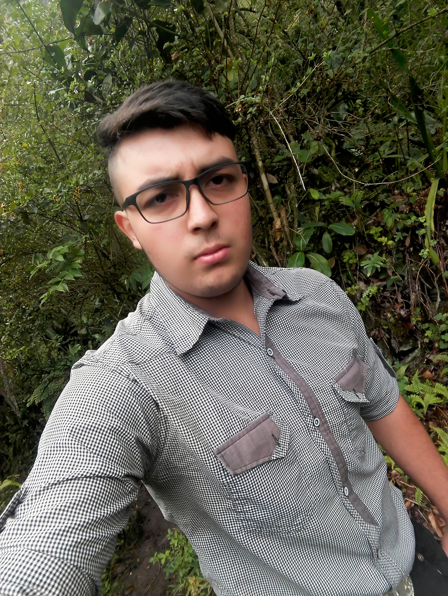

|
Nombre: Bairon Duvan Martin Moreno |
 |
#AgéndateConLaUNAD Conoce las tendencias en los avances tecnológicos y el impacto de la innovación en la vida de las personas, integrando a investigadores, estudiantes y profesionales, tanto nacionales como internacionales.
— Universidad UNAD (@UniversidadUNAD) October 10, 2020
📍Del 14 al 16 de octubre.
👉https://t.co/wtQVZSOsgk pic.twitter.com/8tNeHtue6f